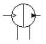
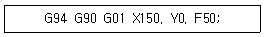
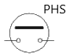
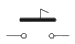
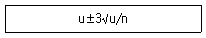
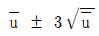
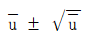
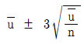
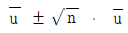
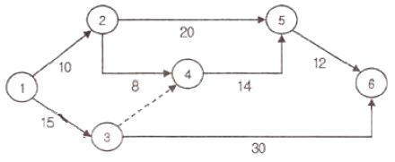

금형제작기능장 (2007-04-01 기출문제)
1과목: 임의 구분
1. 유압기술의 장점 및 단점의 설명으로 옳은 것은?
- 단점: 입력에 대한 출력의 응답이 느리다.
- 단점: 무단 변속이 불가능 하다.
- 장점: 소형 장치로 큰 출력을 얻을 수 있다.
- 장점: 먼지나 이물질에 의한 고장의 우려가 있다.
(정답률: 알수없음)

2. 오일의 점성을 이용하여 진동을 흡수하거나 충격을 완화하는 것은?
- 쇼크 업소버
- 토크 컨버터
- 유압 프레스
- 커플링
(정답률: 알수없음)
3. 공기중의 먼지나 수분을 제거하여 압축 공기를 양질화하는 장치는?
- 윤활기
- 공기 필터
- 압력 조절기
- 공기 탱크
(정답률: 알수없음)
4. 다음 그림과 같은 공유압 기호의 명칭은?

- 어큐물레이터(연속형)
- 원동기(단동형)
- 공기유압 변환기(연속형)
- 유압 전동장치(단동형)
(정답률: 알수없음)
5. 베르누이 정리에서 에너지 손실이 없는 경우 전(全) 수두는 다음 중 어떻게 표시 되는가?
- 압력수두 + 속도수두 + 부피수두
- 압력수두 + 위치수두 + 속도수두
- 압력수두 + 유량수두
- 압력수두 + 부피수두
(정답률: 알수없음)
6. 다음 중 강재표면의 화학조성을 변화시키지 않고 행하는 경화법은?
- 금속 침투법
- 침탄질화법
- 질화법
- 숏피닝법
(정답률: 알수없음)
7. 다음 중 탄소 공구강 및 일반 공구재료가 갖추어야 할 구비 조건으로 틀린 것은?
- 상온 및 고온 경도가 클 것
- 내마모성이 작을 것
- 강인성이 우수 할 것
- 가공 및 열처리성이 양호할 것
(정답률: 알수없음)
8. 다음 금속재료의 성질 중 기계적 성질은?
- 강도
- 열팽창계수
- 비중
- 비열
(정답률: 알수없음)
9. 두랄루민은 알루미늄에 무엇을 첨가한 것인가?
- Mg + Fe + Cu
- Cu + Mg + Mn
- Ni + Zn + Si
- Cu + Sn + Zn
(정답률: 알수없음)
10. 다음 주조용 알루미늄 합금 중 Al-Si계 합금에 속하는 것은?
- Y-합금
- 실루민
- 두랄루민
- 라우탈
(정답률: 알수없음)
11. 다음 중 불변강으로 사용되는 것이 아닌 것은?
- 엘린바
- 플라티나이트
- 인바
- 하이스텔로이
(정답률: 알수없음)
12. 담금질 균열을 방지하기 위한 방법으로 틀린 것은?
- 급격한 냉각을 피하고 일정 속도로 냉각한다.
- 부분적인 온도 차를 적게 한다.
- 가능한 유냉을 피하고 수냉을 한다.
- 부품설계시 직각부분을 적게 한다.
(정답률: 알수없음)
13. 사출 성형품에 웰드 라인(Weld Line)이 나타나는 원인으로 가장 거리가 먼 것은?
- 수지의 흐름이 나쁘다.
- 사출 압력이 높다.
- 게이트의 위치나 수가 부적당하다.
- 금형온도가 너무 낮다.
(정답률: 알수없음)
14. 성형품의 살 두께를 설계할 때 고려해야 할 사항이다. 거리가 먼 것은?
- 기계적 강도뿐만 아니라 수지의 흐름 특성도 고려한 설계가 되어야 한다.
- 살 두께가 균일하게 설계되어야 한다.
- 성형품의 살 두께는 두껍게 설계 될수록 좋다.
- 성형품의 구조상 충분한 강도에 견디게 설계하여야 한다.
(정답률: 알수없음)
15. 앵귤러 핀의 작용길이 30mm, 경사각 18도이고, 틈새를 무시할 때 슬라이드 블록의 운동거리는 약 얼마인가?
- 9.97mm
- 6.07mm
- 8.17 mm
- 9.27 mm
(정답률: 알수없음)
16. 냉각수 구멍 설계시 유의 사항으로 틀린 것은?
- 냉각 구멍의 방청을 고려하고, 또한 청소가 간편한 구조이어야 한다.
- 냉각수 구멍의 크기는 냉각수가 난류 유동이 되도록 정한다.
- 일반적으로 직경이 작은 여러 개의 냉각 홀 보다는 직경이 큰 1개의 냉각 홀이 냉각 효과가 크다.
- 코어부분과 캐비티 부분은 독립해서 조정하는 것이 효과적이다.
(정답률: 알수없음)
17. 사출금형 설계시 파팅 라인의 위치와 방법을 고려하여야 한다. 다음 중 파팅 라인을 결정하는데 고려해야 할 사항으로 잘못 설명한 것은?
- 눈에 잘 띄는 위치 또는 형상으로 한다.
- 언더컷을 피할 수 있는 곳을 택하다.
- 마무리가 잘 될 수 있는 위치 또는 형상으로 한다.
- 게이트의 위치 및 그 형상을 고려한다.
(정답률: 알수없음)
18. 1회 숏(shot)의 최대량을 나타내는 값으로 형체력과 함께 사출성형기의 능력을 나타내는 것은?
- 히터 용량
- 가소화 능력
- 사출율
- 사출용량
(정답률: 알수없음)
19. 다음 중 성형품의 불량 형상 중 은줄(silver streak)의 발생원인으로 가장 큰 요인은?
- 금형 온도가 높을 때
- 사출속도가 느릴 때
- 사출용량 및 가소화 능력이 충분할 때
- 재료 중에 수분이나 휘발분이 있을 때
(정답률: 알수없음)
20. 다음 그림과 같은 제품을 U굽힘으로 완성가공 하려고 한다. 소재의 길이는 약 얼마인가? (단, 중립면 이동계수 K의 값은 0.5를 택한다. )
- 188 mm
- 225 mm
- 212 mm
- 193 mm
(정답률: 알수없음)
2과목: 임의 구분
21. 다음 중 블랭킹 다이에서 제품의 치수를 정하는 방법을 설명하였다. 가장 적합한 것은?
- 블랭킹 펀치를 정치수로 하여 다이의 치수를 가감하여 클리어런스를 준다.
- 구멍 치수가 필요한 피어싱 할 때는 정치수로 하여 펀치의 치수를 가감하여 클리어런스를 준다.
- 블랭킹이나 피어싱은 다 같이 다이를 정치수로 하여 펀치의 치수를 적게 한다.
- 블랭킹 때는 다이의 치수, 피어싱 때는 펀치를 각각 정치수로 한다.
(정답률: 알수없음)
22. 금형설계를 할 때 파일럿 핀(Pilot Pin)을 사용하는 가장 큰 목적은?
- 제품을 정확히 벤딩 시키기 위해
- 제품을 펀칭하기 위해
- 제품의 위치를 결정하기 위해
- 제품을 돌출하기 위해
(정답률: 알수없음)
23. 소재의 두께 2mm 전단강도 τ=38kgf/mm2 이고, 압축강도 σp=142kgf/mm2 일 때 펀치의 소직경은 약 얼마인가?
- 5.14 mm
- 4.14 mm
- 3.14 mm
- 2.14 mm
(정답률: 알수없음)
24. 상형의 상하운동을 정확히 하형에 안내하여 펀치와 다이의 관계위치를 정확히 유지하며 금형의 수명을 보호하고 제품의 정밀도를 향상하기 위한 부품으로 사용되는 것은?
- 소재안내판
- 가이드포스트와 가이드 부시
- 위치결정핀
- 파일럿 핀
(정답률: 알수없음)
25. U-굽힘에서 스프링 백을 감소시키는 방법을 설명한 것으로 틀린 것은?
- 펀치의 내측에 구배를 만든다.
- 펀치 밑면에 도피 홈을 만든다.
- 패드 장치를 이용하여 다이의 압력을 적당히 조절한다.
- 펀치와 다이 사이의 공간을 크게 한다.
(정답률: 알수없음)
26. 다음 중 4개의 모서리에 가이드 포스트를 설치한 다이 세트는?
- DB형
- BB
- CB
- FB
(정답률: 알수없음)
27. 벤딩가공시 휨이나 비틀림이 생긴다. 그 대책으로 가장 거리가 먼 것은?
- 벤딩 전개 계산이 보정 계수를 수정한다.
- 클리어런스를 균일하게 한다.
- 판 두께 치수를 변경한다.
- 벤딩 선상의 R을 크게 한다.
(정답률: 알수없음)
28. 레이저(Laser)가공의 특징을 설명한 것으로 틀린 것은?
- 비접촉 가공이므로 공구마모가 없다.
- 자동 가공이 쉽고 특히 CNC이용이 가능하다.
- 높은 에너지를 집중시킴으로써 열에 의한 변형이 많다.
- 세라믹, 유리, 석영 등 고경도 취성재료의 가공이 용이 하다.
(정답률: 알수없음)
29. 드릴 가공의 종류 중 볼트 또는 너트의 머리부분이 가공물 안으로 묻히도록 단이 있는 구멍을 절삭하는 방법을 무엇이라고 하는가?
- 카운터 보링
- 리밍
- 보링
- 태핑
(정답률: 알수없음)
30. 프레스 가공의 블랭킹 전단과정에서 펀치와 다이 사이의 틈새(Clearance)가 클 때 나타나는 현상으로 가장 바르게 설명한 것은?
- 제품 또는 소재가 펀치에 부착되어 상승하므로 이를 빼는 힘이 커진다.
- 제품의 전단면이 커지며 깨끗한 가공이 된다.
- 제품의 정도가 향상되며 뒤틀림 현상이 적어진다.
- 전단 날에 작용하는 하중이 작으므로 마모가 적다.
(정답률: 알수없음)
31. 재료 표면 속에 가공하려는 부분만큼을 남겨서 다른 부분을 내약품 도막으로 피복하여 산 또는 알칼리 등에서 이루어지는 가공액 속에 침지하여 화학반응을 일으켜서 노출면 만큼 용해하는 가공법으로 명판, 자의 눈금 등을 만드는 가공법은?
- 부식가공
- 전주가공
- 밀링가공
- 선반가공
(정답률: 알수없음)
32. 600rpm으로 회전하는 스핀들에서 3회전 휴지(Dwell)를 주려고 할 때 NC 프로그램 방법으로 옳은 것은?
- G04 X0.3;
- G04 X0.5;
- G04 P30;
- G04 P50;
(정답률: 알수없음)
33. 가공액 속에서 전극과 가공물 사이에 전기를 통전 시켜, 방전형상의 열에너지를 이용하여, 가공물을 용융 증발시켜 가공을 진행하는 비접촉식 가공방법은?
- 초음파 가공
- 방전 가공
- 전해 연삭
- 드릴 가공
(정답률: 알수없음)
34. CNC 밀링에서 Ø20mm인 엔드밀로 연강을 가공하고자 할 때 주축의 회전수는 얼마인가? (단, 절삭소도는 150m/min이다.)
- 890rpm
- 1390 rpm
- 1590 rpm
- 2389 rpm
(정답률: 알수없음)
35. 앵글 플레이트 지그의 형태로 공작물을 일정한 거리와 각도로 분할 하여 정확한 간격으로 구멍을 뚫는 데 가장 적합한 지그는?
- 리프형 지그
- 분할형 지그
- 채널 지그
- 박스 지그
(정답률: 알수없음)
36. 일반적으로 치공구의 3요소에 해당되지 않는 것은?
- 위치 결정면
- 클램프
- 위치 결정구
- 게이지
(정답률: 알수없음)
37. 일감을 지그에 고정할 때에는 일감에 변형이 나타나거나 절삭력에 의하여 일감의 위치가 변하지 않아야 하며, 일감을 고정하거나 풀기가 쉬워야 한다. 지그의 클램핑(체결) 방식이라고 할 수 없는 것은?
- 나사 클램핑
- 캠 클램핑
- 유압, 공기압을 이용한 클램핑
- 리벳을 이용한 클램핑
(정답률: 알수없음)
38. 공작기계 자체로 절삭할 수 없는 윤곽을 절삭할 수 있도록 절삭 공구를 안내하는데 사용되며 커터는 고정구와 계속적으로 접촉되어 있으므로 고정구의 윤곽대로 절삭되는 것은?
- 멀티스테이션 고정구
- 앵글플레이트 고정구
- 총형 고정구
- 분할 고정구
(정답률: 알수없음)
39. 다음 중 구명용 한계게이지가 아닌 것은?
- 판형 플러그 게이지
- 스냅게이지
- 원통형 플러그 게이지
- 봉 게이지
(정답률: 알수없음)
40. 정밀 정반의 평면도, 마이크로미터의 직각도, 평행도, 공작기계 베드 면의 진직도, 직각도, 기타 미소각의 차 등의 측정에 이용되는 광학적 측정기는 ?
- 공기 마이크로미터
- 오토콜리메이터
- 전기 마이크로미터
- 텔리스코핑 게이지
(정답률: 알수없음)
3과목: 임의 구분
41. 수나사의 측정법 중 3침법은 다음의 어느 것을 측정하는데 가장 적합한가?
- 리드각
- 유효경
- 피치
- 나사산의 각도
(정답률: 알수없음)
42. 다이얼 게이지를 이용한 진원도 측정법이 아닌 것은?
- 직경법
- 3점법
- 반경법
- 2점법
(정답률: 알수없음)
43. 한국산업규격 촉침식 표면 거칠기 측정기에서 촉침과 변환기를 가지고 대상물에 직접 닿아 궤적을 그리는 요소를 포함한 기구는?
- 트레이싱 요소
- 노즐
- 측정 루프
- 프로브
(정답률: 알수없음)
44. 게이지 블록과 같이 밀착이 가능하므로 헐더가 필요 없으며, 각도의 가산, 감산에 의해서 필요한 각도를 조합할 수있고 조합 후 정도는 2~3”인 것은?
- 오토콜리메이터
- N.P.L식 각도 게이지
- 기계식 각도 정규
- 수준기
(정답률: 알수없음)
45. 3D모델링 방법에서 가장 고급적인 기법으로 셀 혹은 기본곡면이라고 불리는 직육면체, 구, 원추, 실린더 등의 입체 요소들을 조합하여 모델을 구성하는 방식은?
- 서페이스 모델링
- 와이어프레임 모델링
- 솔리드 모델링
- 직선 모델링
(정답률: 알수없음)
46. 최근 CAD/CAM 시스템에서 지원되고 있는 곡선으로 4개의 조정 점 외에 4개의 가중치 값과 놋트 벡터라는 추가적인 정보가 이용되는 곡선은?
- 퍼거슨 곡선
- 원추 곡선
- 스플라인 곡선
- NURBS 곡선
(정답률: 알수없음)
47. CAD 시스템에서 선, 원, 문자 등 동형 형상을 구성하는 최소 단위를 무엇이라 하는가?
- 요소
- 모델
- 데이터
- 픽셀
(정답률: 알수없음)
48. CAM 소프트웨어를 이요한 곡면 가공에서 CL데이터를 이용하여 공구의 위치, 과절삭, 미절삭 등을 확인하는 과정을 무엇이라 하는가?
- 곡면 정의
- 전처리
- 도형저의
- 공구경로 검증
(정답률: 알수없음)
49. 아래와 같은 머시닝 센터 프로그램에서 현재 공구가 프로그램 원점에 위치해 있을 때 공구가 지령 된 위치까지 도달하는 시간은? (단, 스핀들의 회전수는 120rpm이다.)

- 3초
- 3분
- 1.5초
- 1.5분
(정답률: 알수없음)
50. 자동화시스템의 도입으로 얻을 수 있는 장점이 아닌 것은?
- 생산성 향상
- 원가절감
- 생산제품의 품질 균일
- 시설투자비와 운영비 절감
(정답률: 알수없음)
51. 물체의 위치와 속도, 가속도 등 방향 및 자세 등의 기계적인 변위를 제어량으로 하고 시간에 따라 변화하는 제어량이 목표 값에 정확히 추종하도록 설계한 제어계로서 공작 기계의 제어 등에 이용되는 제어는?
- 수치 제어
- 서보 제어
- 자동 조정
- 고정 제어
(정답률: 알수없음)
52. 다음 그림과 같은 기호 중 에서 검출 스위치에 속하지 않는 것은?




(정답률: 알수없음)
53. 금속체나 자성체에서 발생 되는 전계나 자계의 변화를 감지하여 접점을 개폐하며, 물체와 직접 접촉하지 않고 검출하는 스위치는?
- 리미트 스위치
- 풋 스위치
- 근접 스위치
- 압력 스위치
(정답률: 알수없음)
54. 전동기가 가동이 되지 않을 때 점검항목에 속하지 않는 것은?
- 전원 주파수 변동 유무
- 과부하 유무
- 퓨즈의 단선
- 상 결선의 단락
(정답률: 알수없음)
55. 다음 중 절차 계획에서 다루어지는 주요한 내용으로 가장 관계가 먼 것은?
- 각 작업의 소요시간
- 각 작업의 실시 순서
- 각 작업에 필요한 기계와 공구
- 각 작업의 부하와 능력의 조정
(정답률: 알수없음)
56. 작업자가 장소를 이동하면서 작업을 수행하는 경우에 그 과정을 가공, 검사, 운반, 저장 등의 기호를 사용하며 분석하는 것을 무엇이라 하는가?
- 작업자 연합작업분석
- 작업자 동작분석
- 작업자 미세분석
- 작업자 공정분석
(정답률: 알수없음)
57. u 관리도의 관리상한선과 관리 하한선을 구하는 식으로 옳은 것은?





(정답률: 알수없음)
58. 그림과 같은 계획공정도에서 주공정으로 옳은 것은?

- ① - ③ - ⑥
- ① - ② - ⑤ - ⑥
- ① - ② - ④ - ⑤ - ⑥
- ① - ③ - ④ - ⑤ - ⑥
(정답률: 알수없음)
59. 모집단을 몇 개의 층으로 나누고 각 층으로부터 각각 랜덤하게 시료를 뽑는 샘플링 방법은?
- 층별 샘플링
- 2단계 샘플링
- 계통 샘플링
- 단순 샘플링
(정답률: 알수없음)
60. 다음 중 관리의 사이클을 가장 올바르게 표시한 것은? (단 A: 조치, C: 검토, D: 실행, P: 계획)
- P-C-A-D
- P-A-C-D
- A-D-C-P
- P-D-C-A
(정답률: 알수없음)